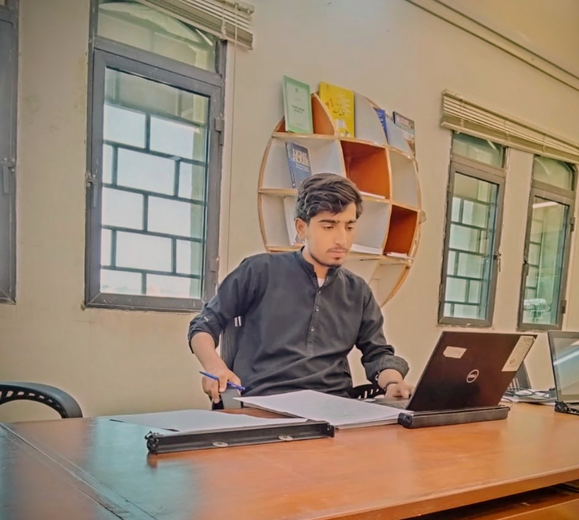

Python Programming
Learning programming fundamentals, variables, conditions, loops, functions, and problem-solving.
ProgrammingWELCOME TO MY PORTFOLIO
I am passionate about technology, programming, computer networking, Linux, and web development. I am continuously learning and building my technical skills with a long-term goal of becoming a Cyber Security Specialist.

Learn. Practice. Grow.
A LITTLE ABOUT ME
Hello! My name is Abdul Haseeb. I am a Software Engineering student interested in computer technology, software development, and cybersecurity.
I am learning Python programming, computer networking, Linux, database management, data structures and algorithms, and web development. I enjoy understanding how technology works and improving my skills through practice and small projects.
My long-term ambition is to become a Cyber Security Specialist. I plan to strengthen my networking, programming, and Linux fundamentals before progressing into cybersecurity and ethical hacking in authorized lab environments.
MY TECHNICAL JOURNEY
The subjects I am studying to build a strong foundation in software engineering and IT.
Learning programming fundamentals, variables, conditions, loops, functions, and problem-solving.
ProgrammingStudying OSI and TCP/IP models, IP addressing, subnetting, VLANs, switching, and routing.
NetworkingPracticing Linux commands, file systems, users, permissions, and system administration.
Operating SystemsLearning SQL, database concepts, tables, relationships, and data organization.
DatabaseExploring data structures, algorithms, searching, sorting, and logical thinking.
Problem SolvingCreating web pages using HTML and CSS, with plans to explore JavaScript and more.
Web TechnologiesLOOKING AHEAD
LONG-TERM CAREER GOAL
My goal is to understand how computer systems and networks are attacked and how they can be protected. I want to develop practical skills in network security, Linux, Python, vulnerability assessment, and ethical hacking while following legal and ethical practices.
MY WORK
A space for my current and future practical work.
PROJECT 01
A personal website developed with HTML and CSS to introduce my skills, interests, and goals.
HTML & CSSPROJECT 02
My planned collection of Packet Tracer labs covering IP addressing, VLANs, switching, and routing.
Cisco Packet TracerPROJECT 03
A planned collection of Python exercises to improve programming fundamentals and problem-solving.
PythonGET IN TOUCH
Thank you for visiting my portfolio. I am always interested in learning, practicing, and building new technical projects.
Email ME